Carry a design through plan and review
On this page
Back to implementation studies · Download the editable study


Trace a requirement across three procedure files. Build a paper handoff that a second person can verify from a task brief and the complete change.
Start offline
Work the case below before you inspect the original source. The trace, exercise and worked answers are complete offline. The local Trace Rollup contract gives you another handoff. Match one requirement to an observable test. The optional upstream links at the end need an internet connection.
Work one handoff
A local archive report must include a count of items by status. The
stakeholder specifies exact output columns status,count, a
row for each supported status and lexical order. The stakeholder
delegates the name of the internal helper. A fixture contains records
with statuses open, closed,
open.
Assign the requirement ID R1. In the plan, place R1 under Task 1. Use
command python -m unittest tests.test_report and name the
expected three output lines: header status,count, row
closed,1 and row open,2. Add an empty fixture.
Decide in the design if empty input must produce zero counts for known
statuses. That output changes the interface. Name the requirement before
the implementer starts.
Assume Task 1 starts at commit A. The implementer adds tests in commit B, then code in commit C. The review package must cover A to C. A package from B to C omits the test addition. The full change matters because a test can accidentally encode the same error as the implementation.
Write the review inputs on one card. Include the brief, implementer
report, range A to C and the exact output obligations. Ask for the spec
verdict and code quality verdict. A reviewer can then point to the
origin of closed,0 on empty input instead of arguing from
memory.
Work through a failure
The reviewer sees correct counts in the report. The test fixture only expects statuses present in its records. On empty input, all count rows disappear. The exact-open-and-closed requirement is absent from both the tests and the handoff card.
Trace the dropped information. The design said all supported statuses. The plan's only assertion used both status values, so the fixture could not distinguish two interpretations. Add the empty fixture with an exact expected output. Update the review package for the entire task and verify the fix on that range.
Another failure happens when a task brief duplicates a helper signature from an earlier task and one copy drifts. The later implementer may write a second adapter to bridge them. Bind the later task to the first interface definition and check both tasks against that one record.
Adapt the procedure
Write a brief for a different feature with one exact output field and one boundary case. Draw the transition from design decision to task and test. Simulate two work commits and one repair commit. Give a reviewer the range and outputs. Ask them to state which requirement each finding affects.
Use local written role cards if separate reviewers are unavailable. Mark the role that performed each check and whether the person saw the original implementation. This makes the evidence easy to interpret.
Check your solution
Every fixed behavior maps to a named test. The review range includes work and tests. The boundary case distinguishes the two plausible interpretations. The reviewer records separate verdicts and identifies the relevant requirement. A final task state points to the evidence for its verdict.
Retrieve from memory
- Which decisions belong in the design before the plan?
- Why can a last-commit diff fail to represent a task?
- How do you prove a boundary case tests the written requirement?
Show worked answers
- The stakeholder settles exact output and scope. Delegate choices that do not change the contract.
- The last commit can omit earlier work in the same task. Use the start commit and the task head.
- Use a fixture with different expected outputs under the two interpretations. State the required output before review.
Optional source inspection
Open Superpowers brainstorming/SKILL.md at “Size the Work” and “The Written Design.” Read writing-plans/SKILL.md at “What a Step Contains,” “Self-Review” and “Execution Handoff.” Read subagent-driven-development/SKILL.md at “Handle the report,” “Review the task,” “The fix loop” and “Complete the task.” The three links use mutable main, read on 2026-11-20.
Treat these files as procedure specifications. Mark each expected input and output. The design lists decisions and constraints. The plan translates them into interfaces, steps and checks. The task procedure links the brief and report to a change range. It asks for task compliance and code quality verdicts. The exercise below uses roles two people can perform without an agent host.